Обзор
Чтобы завершить этот урок, мы перейдем к CRYENGINE. Мы будем использовать Character Tool и внутреннюю систему прикрепления персонажей.
Учебные файлы
Загрузите и разархивируйте содержимое файла учебного пособия в папку <CRYENGINE_ROOT>.
"SkeletonList.xml" обычно находится по адресу "<DRIVE_LETTER>:\<CRYENGINE_ROOT>\GameSDK\Animations".
Исходные сцены 3ds Max/Maya с экспортированными файлами CRYENGINE:
Поскольку список скелетов не используется в версии Engine 5.6 и более поздних версиях, файл Tutorial SkeletonList.xml загружать не нужно. Любые другие ссылки на этот файл в этом руководстве также можно игнорировать.
Пожалуйста, сделайте резервную копию вашего «SkeletonList.xml» перед перезаписью!
Если вы хотите немедленно открыть предоставленное руководство CDF в Character Tool, вам сначала придется добавить файл конского хвоста CHR в свой собственный "SkeletonList.xml".
Настройте экспортированные ресурсы в Character Tool пользователя CRYENGINE.
Из последнего раздела вы должны экспортировать эти файлы:
- ponytail_skel.chr (основной базовый скелет, к которому вы хотите прикрепить хвостик SKIN)
- ponytail_msh.skin (приложение SKIN для расширения базового персонажа/скелета)
- ponytailMAT.mtl (стандартный заготовочный материал)
- по умолчанию.i_caf (несжатая анимация для управления физикой конского хвоста)
В этом разделе мы рассмотрим процесс добавления файла *.chr в "SkeletonList.xml", создания нового персонажа и расширения нового персонажа с помощью "конского хвоста" "Skin Attachment". После этого мы перейдем к следующему разделу, демонстрирующему систему крепления «Character Tool» с некоторыми вариантами использования. В итоге у вас будет...:
- отредактировал SkeletonList.xml
- добавлен файл *.cdf
- добавлен файл *.chrparams
- добавлен файл *.animsettings
- (сгенерирован сжатый файл *.caf)
Добавьте нового персонажа в Character Tool пользователя CRYENGINE.
- Запустите редактор Sandbox и откройте Character Tool. Добавьте экспортированный файл *.chr в файл SkeletonList.xml.
Добавьте экспортированный файл скелета *.CHR в файл "SkeletonList.xml".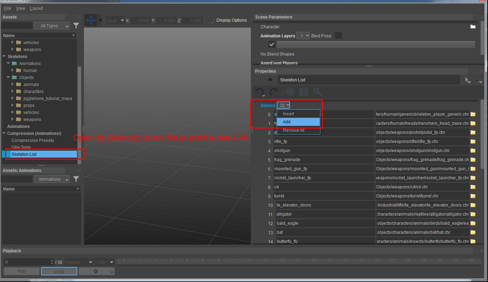
- Ваша новая запись должна выглядеть следующим образом, в зависимости от того, хотите ли вы изменить имя скелета и сколько записей скелета уже было добавлено.
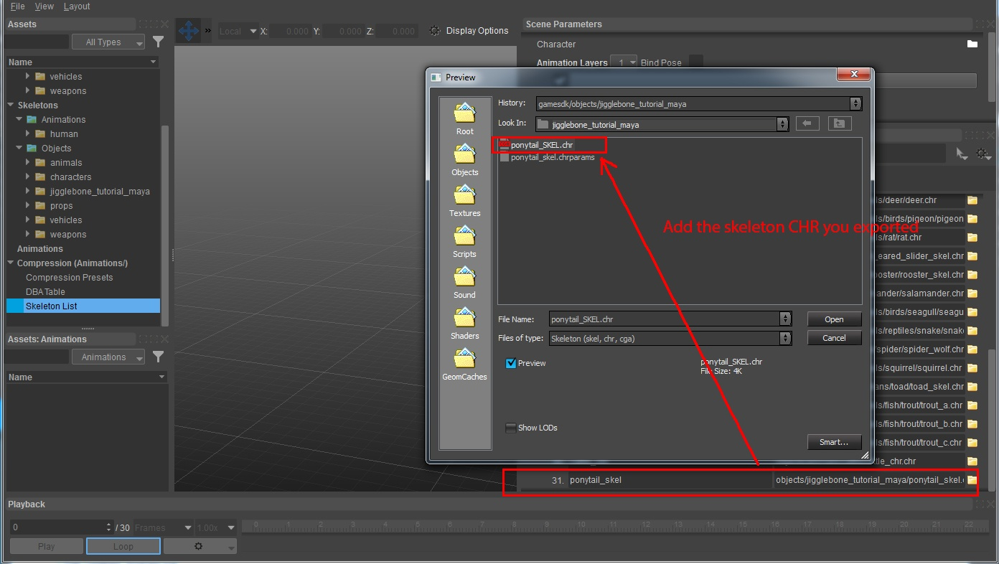
- Не забудьте сохранить "SkeletonList.xml", иначе вы не сможете найти скелет после создания CDF и попробуйте указать CDF на файл скелета/CHR!
Сохраните свой "SkeletonList.xml"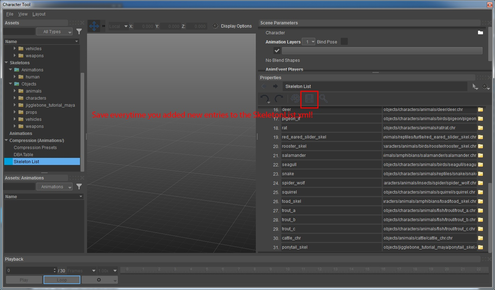
- Теперь пришло время добавить новый символ CRYENGINE, создав новый файл *.CDF. В строке меню Character Tool выберите «Файл» -> «Новый персонаж...», и откроется новое диалоговое окно. Перейдите в папку вашего проекта (наша находится в папке "GameSDK\Objects\jigglebone_tutorial_maya") и дайте CDF правильное имя. В нашем случае мы выбрали «attachment_ponytail.cdf».
Добавьте новый CDF (файл определения символов)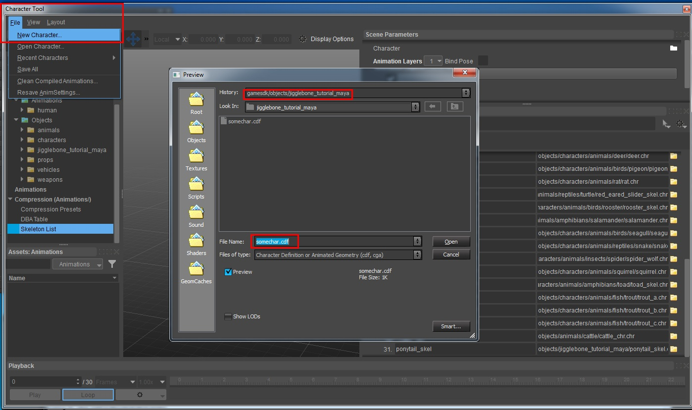
Посмотрите на панель слева от Character Tool. Вы найдете файл вашего нового персонажа CDF в папке:
Персонажи -> Объекты -> jigglebone_tutorial_maya\attachment_ponytail.cdf.
Дважды щелкните по нему, чтобы открыть персонажа. Обратите внимание на звездочку перед именем?Если вы видите звездочку «*» перед именами в CRYENGINE, это означает, что последние внесенные вами изменения еще не сохранены. Поэтому нажмите значок «Сохранить», когда вы будете довольны изменениями.
На правой панели отображаются свойства CDF, там найдите *.chr, который вы экспортировали и добавили в "SkeletonList.xml":
Добавьте скелет снова в CDF!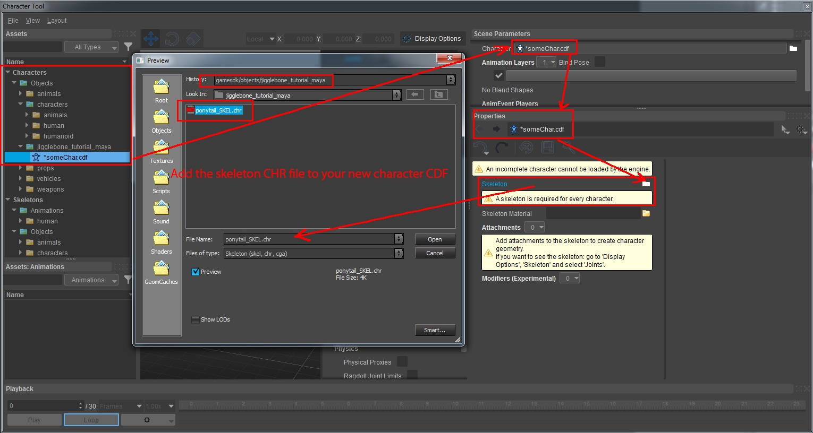
- Вы можете включить отображение соединений и имен соединений, чтобы увидеть, что у вас есть скелет без какой-либо привязанной к нему геометрии.
Отображение суставов, чтобы убедиться, что вы правильно экспортировали свой скелет!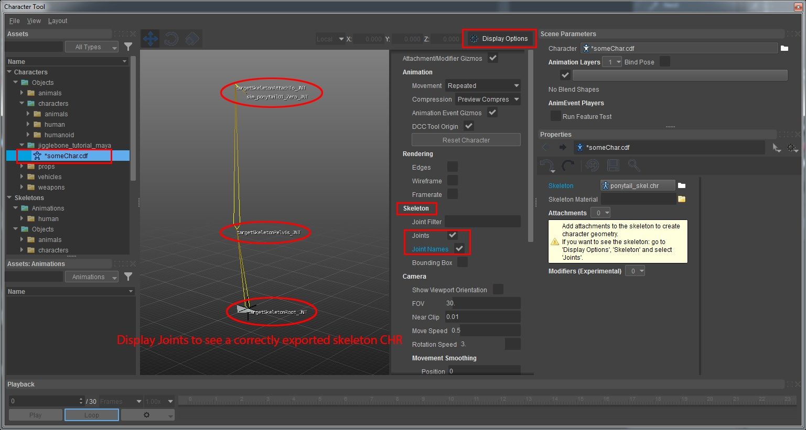
- Поскольку мы добавили только абстрактный скелет как изображение человеческого персонажа (был сделан только таз и голова вместе с корневым суставом!), нам даже не нужен человекоподобный меш, привязанный к этому скелету. Это просто для того, чтобы показать вам, насколько минималистичным мы можем сделать базовый скелет, и сосредоточиться на физической части, которая будет описана в следующем разделе.
Добавьте конский хвост в качестве «прикрепления для кожи», чтобы расширить базовый скелет.
- Мы должны добавить насадку для кожи конского хвоста. Пока персонаж CDF все еще активен, мы можем добавить вложение и изменить «Совместное вложение» по умолчанию на «Вложение скина» и выбрать файл «ponytail_MSH.skin».
Добавьте объект со шкурой «конский хвост» в качестве «Skin Attachment».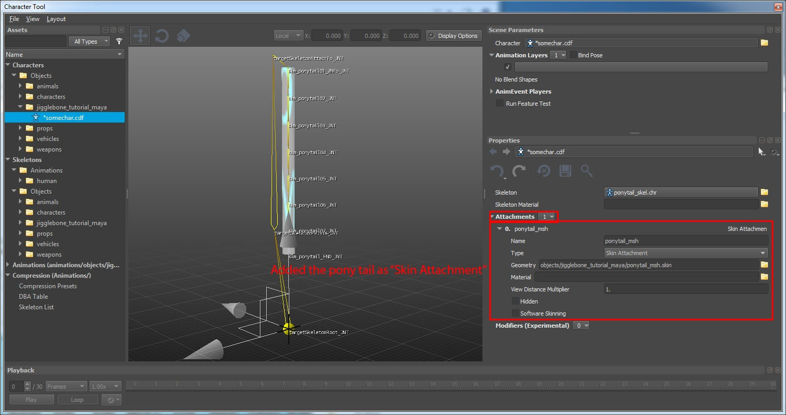
Получите экспортированные анимации, добавив файл *.CHRPARAMS в скелет CHR.
- Нажмите на файл скелета CHR, чтобы получить доступ к его chrparams. CRYENGINE автоматически создаст для вас файл *.chrparams, если не сможет его найти. Следующий шаг — сообщить Character Tool, куда вы экспортировали анимацию.
Добавьте файл *.CHRPARAMS, щелкнув скелетную запись CHR в CDF.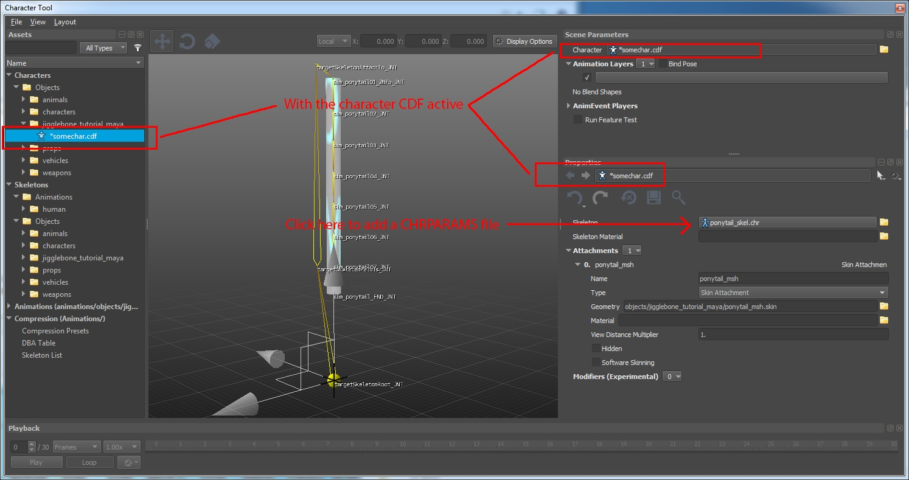
- Перейдите в папку, в которой Character Tool найдет наши анимации.
Установить папку анимации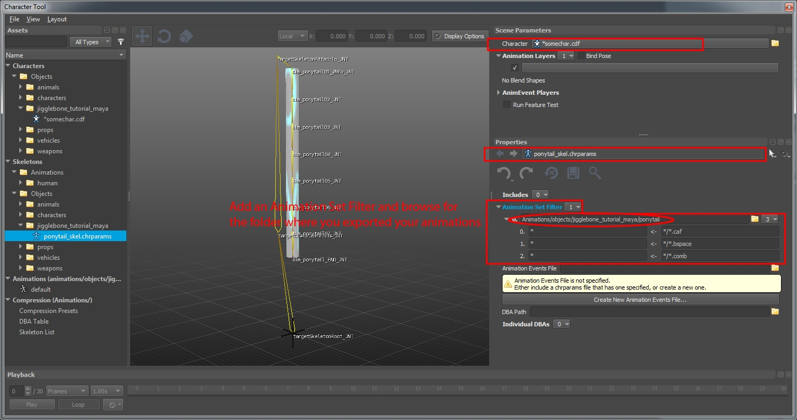
- После того, как вы закончили и сохранили файл *.chrparams, вы должны увидеть анимацию, которую мы создали и назвали «по умолчанию» в раскрывающемся списке «Анимации». Посмотрите на левую панель окна Character Tool и найдите эту анимацию:
Экспортированный вами набор анимации: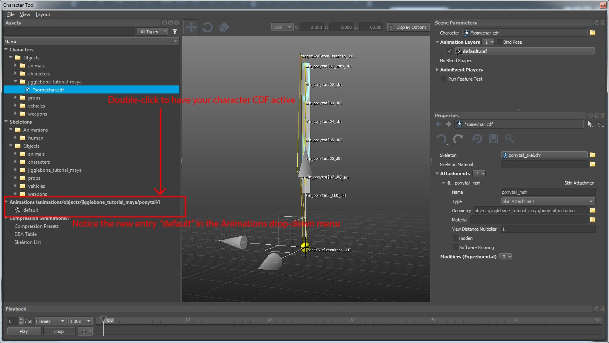
- Проверьте правильность экспортированной анимации, нажав double на файл «по умолчанию» или просто нажав кнопку «Воспроизвести» в нижнем разделе «Воспроизведение». Character Tool также должен создать для вас файл *.animasettings и сжать экспортированные файлы *.i_caf в *.caf.
Добавьте «Совместные крепления», чтобы позволить физике системы крепления управлять суставами кожи конского хвоста.
- Для каждого сустава хвоста, участвующего в симуляции, мы добавим «Прикрепление сустава» в CDF вашего персонажа. Посмотрите на названия суставов «конский хвост». Мы поставили им префикс «sim». Итак, для этих указанных соединений выполните следующие действия:
- Активируйте флажок «Перенаправить на соединение», повторите это для каждого последующего соединения моделирования.
- Каждому соединению должно быть присвоено уникальное имя. Повторите это для каждого последующего симуляционного соединения.
- Просмотрите и укажите сустав/кость, связанную с геометрией хвоста, повторите это для каждого последующего дочернего сустава, идущего от корня к листовому суставу.
- Выберите тип моделирования: «Маятниковый конус» для каждого шарнирного соединения.
Как активировать физику системы крепления: убедитесь, что вы правильно установили эти пять областей!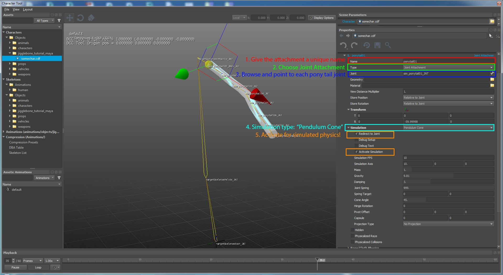
- После того, как вы добавили «Прикрепление сустава» для всех суставов моделирования «конского хвоста» и установили пять параметров, показанных на шаге 1, ваша базовая настройка завершена.
Добавлены результирующие «Совместные вложения».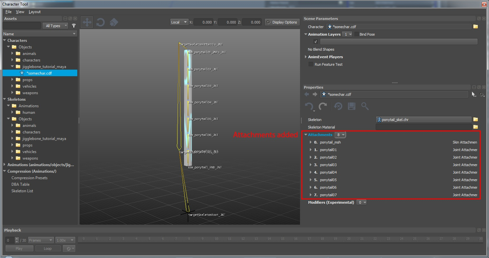
Далее вы поиграетесь с настройками физики «Маятникового конуса». Это будет объяснено в следующем разделе и какие параметры вносят большие изменения.
Физика суставов в Character Tool
Прежде чем мы углубимся в параметры моделирования, давайте изменим расположение свойств в правой части окна Character Tool. Это важный шаг, позволяющий одновременно настраивать значения для нескольких «совместных вложений».
Переключатель макета для управления физическими параметрами нескольких соединений.
Разделите правую панель в разделе «Свойства» на две правую и левую половины. 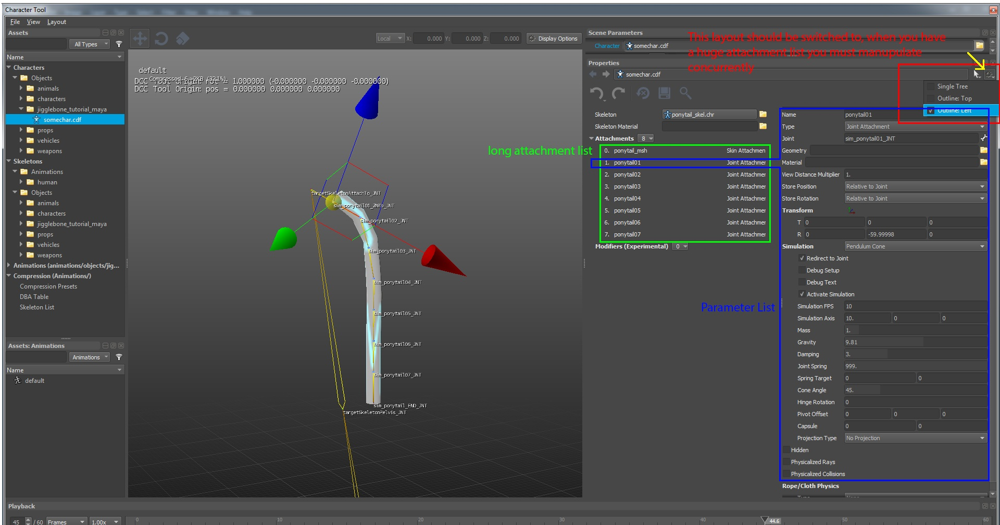
Попробуйте выбрать несколько соединений соединений слева и внести изменения для того же параметра справа. Круто, да?
Всегда используйте этот макет для настройки параметров нескольких вложений. 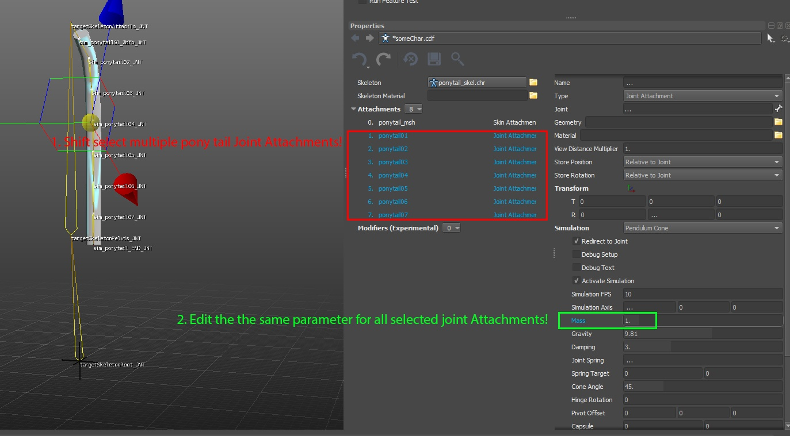
Кроме того, вам следует включать/выключать представление отладки при внесении изменений в параметры моделирования:
Представление отладки 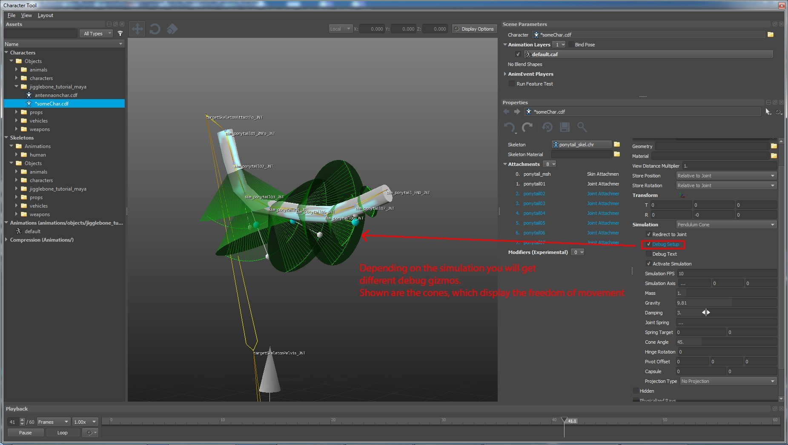
I. Вариант использования физики 1: (Файл: attachment_ponytail.cdf)
Укладка «конского хвоста» с использованием маятниковых конусов
Во-первых, физика маятника будет производить вращение только ваших смоделированных узлов. Если вам нужны переводы, используйте пружинные насадки или, по крайней мере, смешайте насадки, имитирующие пружину и маятник. Вы увидите изгиб суставной цепи.
Стратегия изменения физических параметров заключается в одновременном изменении только одного типа, в идеале начиная сверху. Для физической системы Pendulum мы выделили имена параметров с помощью значка Синий цвет.
Обратите особое внимание на эти два параметра для каждого «Присоединения сустава» в списке вложений. 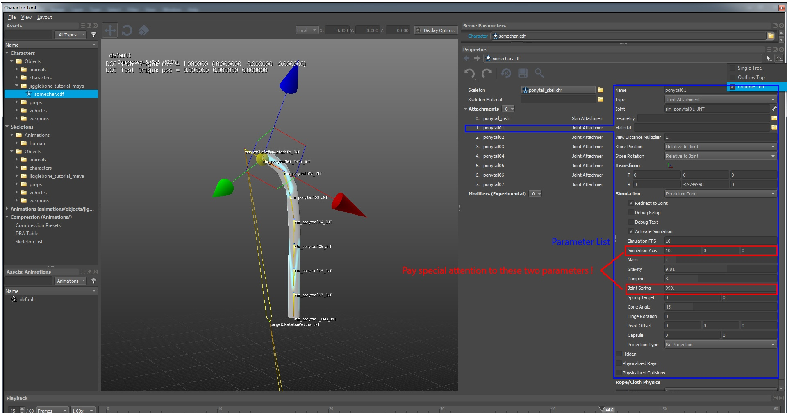
Физические параметры, которые обычно не требуется изменять.
- Гравитация : За исключением того, что вы хотите имитировать космическое пространство или пребывание на других планетах.
Основные параметры физики маятника:
- Ось моделирования это маятник вектор и длина. ТТаким образом, вектор v1 = [500, 0, 0] не равен v2 = [1, 0, 0] в физических расчетах.
Причина, по которой мы уделили особое внимание ориентации «Локальной оси вращения» каждого сустава в Maya/3ds Max, теперь окупается. Нам нужно только ввести значения x для оси моделирования, поскольку целевая ось сустава является его локальной осью x.
Для более «стабильной» симуляции один или два верхних сустава должны иметь маятник большей длины, чем те, что на конце цепи. Откройте предоставленный символ CDF и проверьте значения. - Демпфирование имеет диапазон доменов от [0..10]. Чтобы получить красивый развевающийся хвост, оставьте его на более низких значениях, например, 2 или 3.
- Совместная весна Диапазон значений домена варьируется от 0 до 1000, поэтому не стесняйтесь увеличить его до 50 или 200. Это значение определяет силу, возвращающую симуляцию к исходному соединению. Это значение сделает его поведение более жестким "Моделирование пружинного эллипсоида.
- Угол конуса это степень свободы передвижения. Однако стандартный угол 45 градусов работает нормально в большинстве случаев и требует повторной настройки только один или два раза. Помните, этот параметр также зависит от количества соединений и степени свободы всей шарнирной цепи. В некоторых случаях вам необходимо увеличить его, например. для железной цепи со многими звеньями.
Вторичные параметры физики маятника:
- Моделирование FPS может быть установлено значение FPS, которое вы экспортировали (30 кадров в секунду?), просто будьте разумны. Стандартный 10 FPS отлично работает для более медленных основных анимаций. Увеличьте частоту до 120 кадров в секунду, если у вас «нестабильные» результаты моделирования. Особенно это касается пружин из следующего раздела.
- Весенняя цель позволяет деформировать первоначальную форму суставной цепи. Совместная весна будет тянуться к этой цели из начального местоположения совместной цепи. Вы еще не смоделировали цепочку из хвоста в красивую S-образную форму? Теперь используйте пружинную цель, чтобы изменить ее форму.
- Смещение поворота позволяет переместить точку симуляции в другое место. Если вы правильно выполнили ориентацию и размещение суставов в своем 3D-приложении, вам не нужно выполнять повторную настройку.
- Вы можете добавить смещение Тперевести или РПоверните каждый сустав скелета хвоста с помощью этих двух векторов:
Для первого сустава мы добавили смещение вращения, чтобы хвост выглядел так, будто он торчит из затылка, а затем свисает.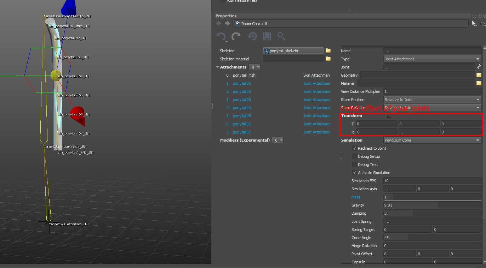
Параметры, не влияющие на моделирование «Маятникового конуса»
- Масса
- Вращение шарнира применимо только к Маятниковый шарнир моделирование и будет перезаписан Угол конуса
Все остальные упомянутые параметры применимы к другим типам маятников: маятниковому шарниру, маятниковому полуконусу и т. д.
Попробуйте использовать одни и те же значения параметров для моделируемых соединений, особенно это касается равноудаленных соединений.
Если вы оставите для соединений симуляции «Маятниковый конус» значения по умолчанию, вы можете поиграть с Демпфирование, Совместная весна и Угол конуса чтобы получить хорошие результаты:
используйте низкий уровень Демпфирование значения около 0,3 с шагом 0,05.
начать с Совместное Весна значения около 20 и продвигайтесь с шагом плюс/минус 5.
увеличить Конус Угол, если симуляция становится прерывистой. Переоценить Демпфирование и Совместная весна.
II. Вариант использования физики 2: (Файл: attachment_antenna.cdf)
Настройка антенны с использованием пружинных эллипсоидов
Во-первых, Spring Physics будет производить только переводы. Если вам нужны вращения, приобретите маятник или хотя бы смешайте пружину и насадки, имитирующие маятник.
Вы увидите растяжение суставной цепи, а вместе с ними каждый из них преобразуется в форму диска или эллипсоида при использовании этого типа моделирования.
Основные параметры пружинного эллипсоида:
- Масса - Хотя это не влияет на физику маятника, оно оказывает огромное влияние на пружины. Применить небольшие значения между 0 и 1.
- Гравитация - Возможно, вы захотите изменить Гравитация для Весенний эллипсоид симуляции. Попробуйте снизить Гравитация и Масса для всех моделируемых соединений, когда пружины имеют тенденцию разрушаться или выходить из строя.
- Демпфирование - Забирает энергию из пружинного движения
- Жесткость насколько жесткими должны быть пружины. Чем выше жесткость, тем большую силу необходимо приложить, чтобы деформировать шарнирную цепь.
- Радиус диска и Сферическая шкала используются для определения свободы движения пружин.
Радиус диска Наиболее важно ограничить удлинение пружины. Если симуляция становится «нестабильной» и сустав вибрирует как сумасшедший, попробуйте увеличить Радиус диска.
Сферическая шкала значение, отличное от 1, деформирует диапазон движения до формы эллипсоида. Если одно из значений равно 0, это ограничит движение пружины диском. - Моделирование FPS должны быть установлены более высокие значения для Весенний эллипсоид чем 10 кадров в секунду по умолчанию, мы рекомендуем 60+ FPS.
Вторичные параметры пружинного эллипсоида:
- Вращение диска связано с Радиус диска и Сферическая шкала. Когда границы пружинного движения имеют форму диска (Сферическая шкала = [0, 0]), с помощью этого параметра можно перевернуть диск.
- Весенняя цель определяет целевую позицию, к которой применяется направление и дополнительная сила. Это приведет к смещению исходного положения пружины.
- Смещение поворота переместит исходное положение симуляции. Если вы правильно выровняли стыки в исходной сцене 3D-приложения, обычно вам не нужно менять это значение.
Пример настройки моделирования «Пружинный эллипсоид» (Файл: attachment_antenna.cdf) 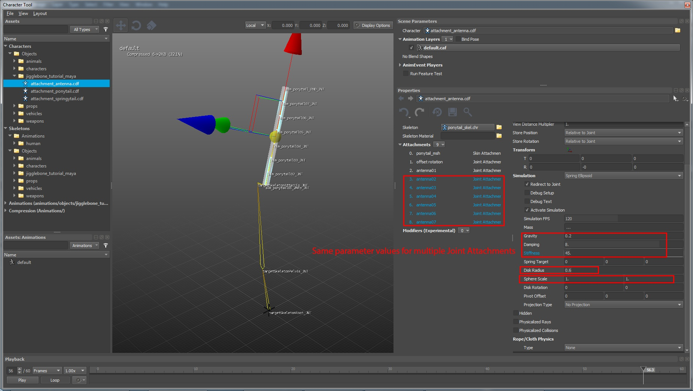
Пружинами управлять гораздо труднее, чем маятником. Вашей главной целью должно быть:
Начните использовать те же значения параметров для моделируемых соединений, но измените длину маятника (Ось моделирования) для «стабилизации» суставов.
При включенном представлении отладки:
увеличить Радиус диска, поэтому пружины имеют полную свободу движения,
ниже Гравитация до небольших значений, напр. 0,2,
увеличение Демпфирование до высоких значений до 10,
ниже Масса ниже 1,0,
играть с Жесткость значения с шагом 5 начинаются с 30.
III. Вариант использования физики 3: (Файл: attachment_springytail.cdf )
Смешение маятников и пружинящих эллипсоидов
Откройте «attachment_springytail.cdf» в Character Tool.
Возможно, вы заметили в предыдущем Вариант использования 2, это чтобы смещение поворота вверх антенну, мы добавили "Маятниковый конус"с начальным вращением. Таким образом, мы могли вращать всю суставную цепочку. Следовательно, у вас может быть симуляция SEVERAL, работающая на суставе ONE:
Достигните аналогичного моделирования маятника с помощью пружин. 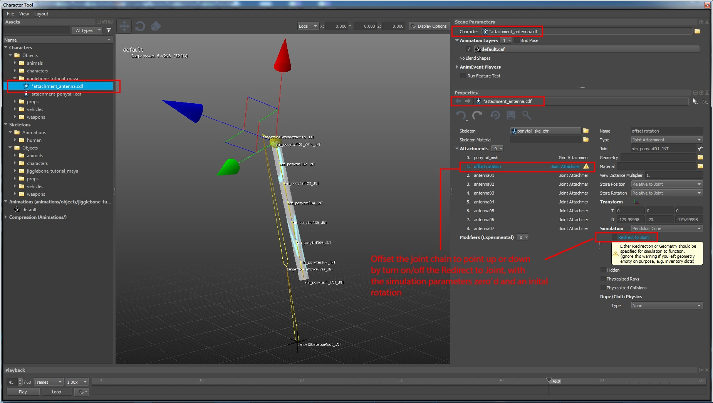
Для создания хвоста мы использовали другую установку, но разница между CDF с пружинами и маятником заключается в следующем. (кроме растяжения (переноса) пружин и изгиба (вращения) моделирования маятника) :
При использовании пружин вся шарнирная цепь наклоняется, так как «головной сустав» (анимируемый узел) оказывается наклоненным, а при использовании маятника вся шарнирная цепь поворачивается вниз, поскольку сила тяжести тянет ее вниз.
Сравниваем разницу в установках с Springs и Pendula в позе отдыха. 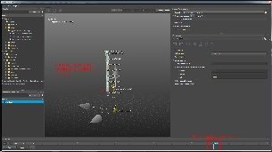 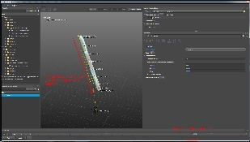
В образце пружины CDF мы добавили перед пружинами шарнир, моделирующий маятник, чтобы компенсировать вращение шарнирной цепи. Мы также могли бы воспроизвести настройку только маятника, изменив значение маятника, тянущегося вниз под действием силы тяжести.
Резюме
Чего мы достигли в этом уроке:
- Создайте упрощенный абстрактный скелет персонажа (в качестве основного скелета).
- Создайте простую цепочку костей 3ds Max/Maya суставов (в качестве вторичного скелета).
- Создайте и плавно привяжите полицилиндр к шарнирной цепи (вторичный скелет).
- Изучите требования/правила для прикрепления вторичного скелета к основному скелету персонажа в CRYENGINE.
- Подготовьте сцену Maya к экспорту для CRYENGINE, в 3ds Max нам не нужно менять иерархию сцен.
- Создайте узлы CRYENGINE и базовый материал для экспорта в CRYENGINE.
- Соберите экспортированные ресурсы 3ds Max/Maya внутри Character Tool CRYENGINE.
- Создайте новый файл *.CDF (типичный символ CRYENGINE).
- Удлините персонажа с помощью конского хвоста
- Настройте параметры физического моделирования для «Присоединения сустава».
- Поймите различные варианты использования «Совместных вложений» CRYENGINE.